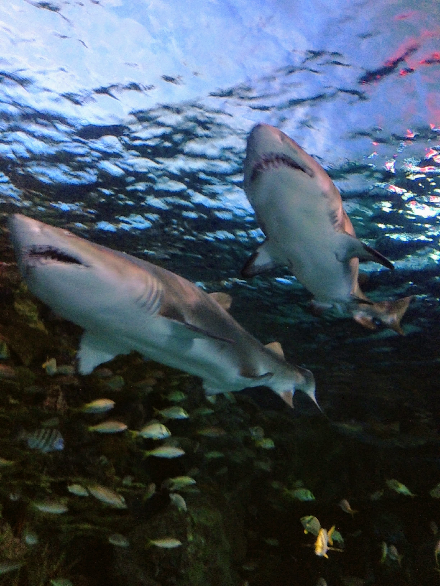

Donate Today to Save an Animal in Need
Photo taken by the CEO at the aquarium.
National Aquarium
This nonprofit organization dedicates their time and efforts in perserving the marine organisms within the ocean. They are trying to help the world by cleaning up the ocean as well because it is a najor dilemma within the sea. Loitering has contributed to the millions of tons of trash that are in the ocean which have been killing hundreds of animals. In fact, turtles have been found endangered due to the trash within in the sea.
World Wildlife Fund - WWF
The donations will be providing aid to the WWF which is the World Wildlife Funds. They are providing awareness of the endangered animals all over the world. They are currently helping the coral reef which is vital in the oceans due to their importance since it helps protect against coastline. It also helps provides maraine habitats and shelter for various creatures in the sea.